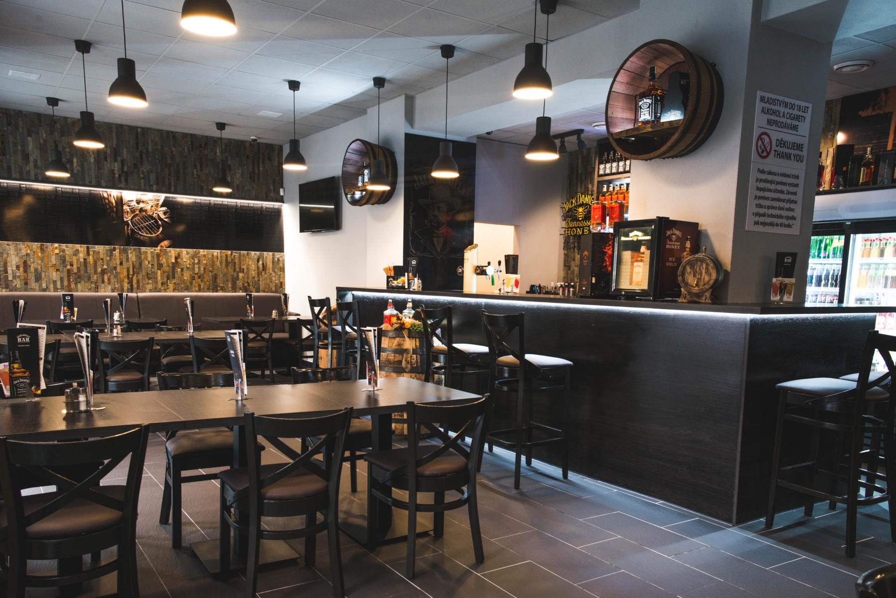
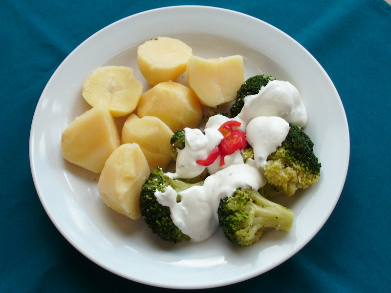
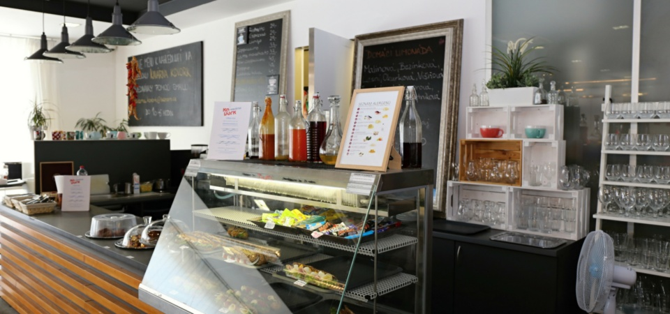
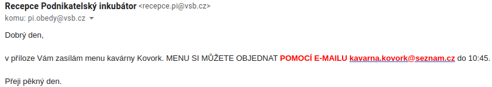
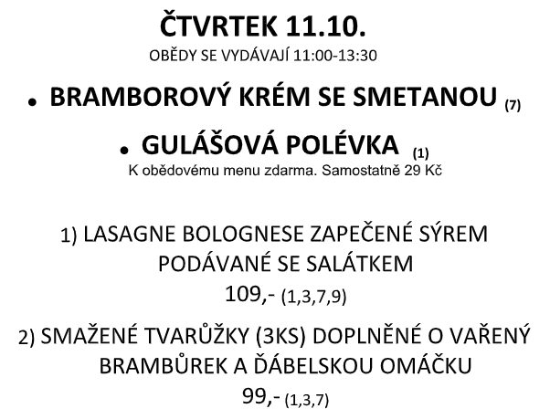

Automatizace objednávání obědů s Pythonem
Automatizace
"Samočinná technologie provádějící opakovaně proces s minimální lidskou asistencí."Proces:
manuální objednávání obědů
- výběr restaurace
- výběr jídla
- odeslání rezervačního e-mailu
- 5-10 minut zabitých každý den

Řešení:
Python!
Plán:
- Získat denní menu restaurací ve strojově čitelné formě
- Nabídnout volbu jídla ve webové aplikaci
- Automaticky vygenerovat a odeslat e-mail do restaurace
Jack's Burger Bar v Porubě
Zdroj: http://www.jacksburgerbar.cz/poruba/galerie/
Jack
Zdroj dat:
Zomato API ☺
- databáze restaurací a denních nabídek jídel
- zdarma 1000 API volání denně
Použité knihovny:
- requests (komunikace s REST API)
- re (zpracování textu pomocí regulárních výrazů)
Jack
Jak to vypadá v Pythonu?
import requests
url = "https://developers.zomato.com/api/v2.1/dailymenu"
data = requests.get(url,
params={"res_id": restaurant},
headers={"user_key": ZOMATO_API_KEY}
).json()
⇩
[{'name': 'Čočka na kyselo s pečenou cibulkou, 2 ks vejce, chléb', 'price': '99 Kč'},
{'name': 'Kuřecí plátky v domácím bramboráku, salát Coleslaw', 'price': '99 Kč'},
{'name': 'Losos s bazalkovou omáčkou, penne', 'price': '119 Kč'}]
Menza č. 5 (VŠB-TUO)
Zdroj: https://menza.vsb.cz/
Menza
Zdroj dat:
HTML tabulka na webu menzy ☹
<tr class="Jidlo">
<td id="Id">5</td>
<td id="Fotka"><img src="./ImageFromDb.aspx?ImgID=775633" /></td>
<td id="Nazev">1/2 pečené kuře, chléb, okurek, zeleninová obloha</td>
<td id="PocetKusu">8</td>
<td id="Cena">81,00</td>
</tr>Použité knihovny:
- mechanicalsoup (automatizace browseru)
- re (zpracování textu pomocí regulárních výrazů)
Menza
Jak to vypadá v Pythonu?
import mechanicalsoup
browser = mechanicalsoup.StatefulBrowser()
browser.open("{}/{}".format(MENZA_URL, "ZalozkaObjednavani.aspx"))
page = browser.get_current_page()
table = page.find_all("table")
rows = table.find_all("tr")
Vyhledání obrázku v řádku tabulky
def find_image(row):
col = row.find(class_="Fotka") # hledání elementů s class="Fotka"
if col and col.contents:
link = col.find("img") # hledání obrázku
if link and "onclick" in link.attrs:
match = re.search("ImgID=(\d+)", link["onclick"])
if match:
return match.group(1)
Kovork
Zdroj: https://cpi.vsb.cz/cs/sluzby/pronajmy-a-inkubator/kovork/
Kovork
Zdroj dat:
Ručně formátovaný text
ve Wordu 2003
odesílaný jako příloha e-mailu
(ノಠ益ಠ)ノ彡┻━┻

⇨

Kovork
Použité knihovny:
- google-api-python-client (čtení a odesílání e-mailů)
- python-docx (získání textu z DOCu)
- re (zpracování textu pomocí regulárních výrazů)
Kovork
Načtení wordu z Gmailu
inbox = gmail.list(userId='me',
q='from:kavarna.kovork@seznam.cz after:1539248619')
for msg in inbox['messages']:
email = gmail.get(userId='me', id=msg['id'])
subject = email['headers']['subject']
if 'menu' in subject.lower():
word = email['attachments'][0]
Kovork
Získání textu z DOCu
from docx import Document
document = Document(word)
menu = document.paragraphs[0].text
python-docx nepodporuje Word 2003 ☹
Řešení:
- www.convertapi.com
- requests (konverze DOC na PDF)
- pdfminer (konverze PDF na text)
Kovork
Konverze DOC na PDF
data = requests.post('https://v2.convertapi.com/convert/doc/to/pdf',
params={'SECRET': CONVERT_API_SECRET},
json=word)
pdf = base64.b64decode(data)
Extrakce textu z PDF
from pdfminer import TextConverter, PDFPageInterpreter, PDFPage
interpreter = PDFPageInterpreter(TextConverter('utf-8'))
page = PDFPage.get_pages(pdf)[0]
text = interpreter.process_page(page).getvalue()
Kovork
Extrakce dat z formátovaného textu
import re
regex = re.compile("^(\d)\)\s*(.*?)\s*(\d+),-",
re.DOTALL | re.MULTILINE)
"1)HOVĚZÍ HAMBURGER (150g) SE ZELENINOU
A BBQ OMÁČKOU PODÁVANÝ S HRANOLKAMI
129,- (1,3,7)"
⇩
{
"id": 1,
"food": "HOVĚZÍ HAMBURGER (150g) SE ZELENINOU A BBQ
OMÁČKOU PODÁVANÝ S HRANOLKAMI",
"price": 129
}
1) Vepřo knedlo zelo 115,-
1) Vepřo knedlo zelo 115,-
1) Vepřo knedlo zelo 115,-
1)_Vepřo knedlo zelo 115,-
1) Vepřo knedlo zelo 115,-
1) Vepřo knedlo zelo_115,-
1) Vepřo knedlo zelo 115,-
1) Vepřo knedlo zelo 115,-
^(\d)\)\s*(.*?)\s*(\d+),-
^(\d)\)\s*(.*?)\s*(\d+),-
^(\d)\)\s*(.*?)\s*(\d+),-
^(\d)\)\s*(.*?)\s*(\d+),-
^(\d)\)\s*(.*?)\s*(\d+),-
^(\d)\)\s*(.*?)\s*(\d+),-
^(\d)\)\s*(.*?)\s*(\d+),-
^(\d)\)\s*(.*?)\s*(\d+),-
^ začni testovat výraz na začátku řádku
(\d) zaznamenej číslici (ID jídla)
\) následovanou znakem konce závorky ')'
\s* ignoruj mezery
(.*?) zaznamenej cokoliv, co najdeš (název jídla)
\s* ignoruj mezery
(\d+) zaznamenej sekvenci číslic (cena)
,- následovanou znaky ',-'
Knihovny:
- flask (web, REST API)
- jinja2 (šablony pro web)
- flask_sqlalchemy (databáze)
from flask import Flask
app = Flask("Obedy")
@app.route("/")
def hello():
return "Hello World!"
@app.route("/")
def hello():
return render_template("index.html",
todos=["Vytvořit prezentaci",
"Naučit se Python"])
index.html
{% for todo in todos %}
- {{ todo }}
{% endfor %}
Dobrý den,
{{ "chtěl" if user.sex == "m" else "chtěla" }}
bych si objednat tyto obědy:
{% for lunch in lunches %}
Oběd {{ lunch['name'] }}) - {{ lunch['count'] }}x
{% endfor %}
S pozdravem,
{{ user.name }}
class Menu(db.Model):
id = db.Column(db.Integer, primary_key=True)
restaurant = db.Column(db.String(80))
items = db.Column(db.Text)
date = db.Column(db.DATE)
menu = Menu(restaurant="kovork", items="...", date=datetime.today())
db.session.add(menu)
db.session.commit()
Zbývající automatizace
- cron - každý den v 10:30 se automaticky odešle e-mail
- Slack - objednávání přes Slack příkazy